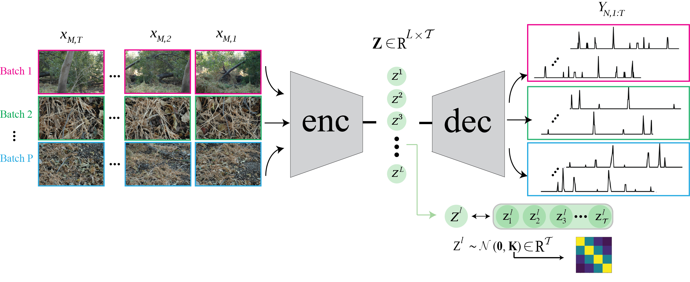
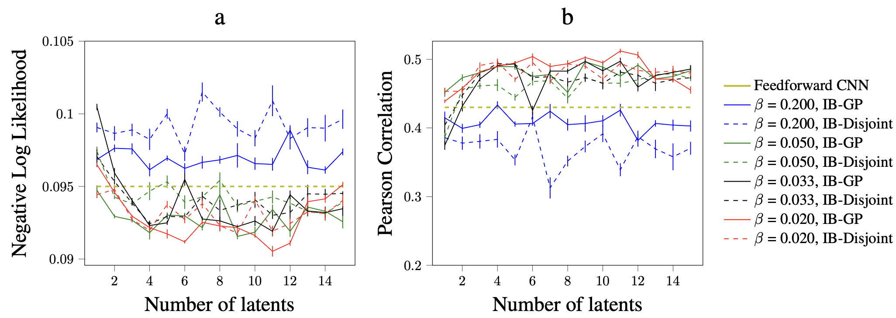
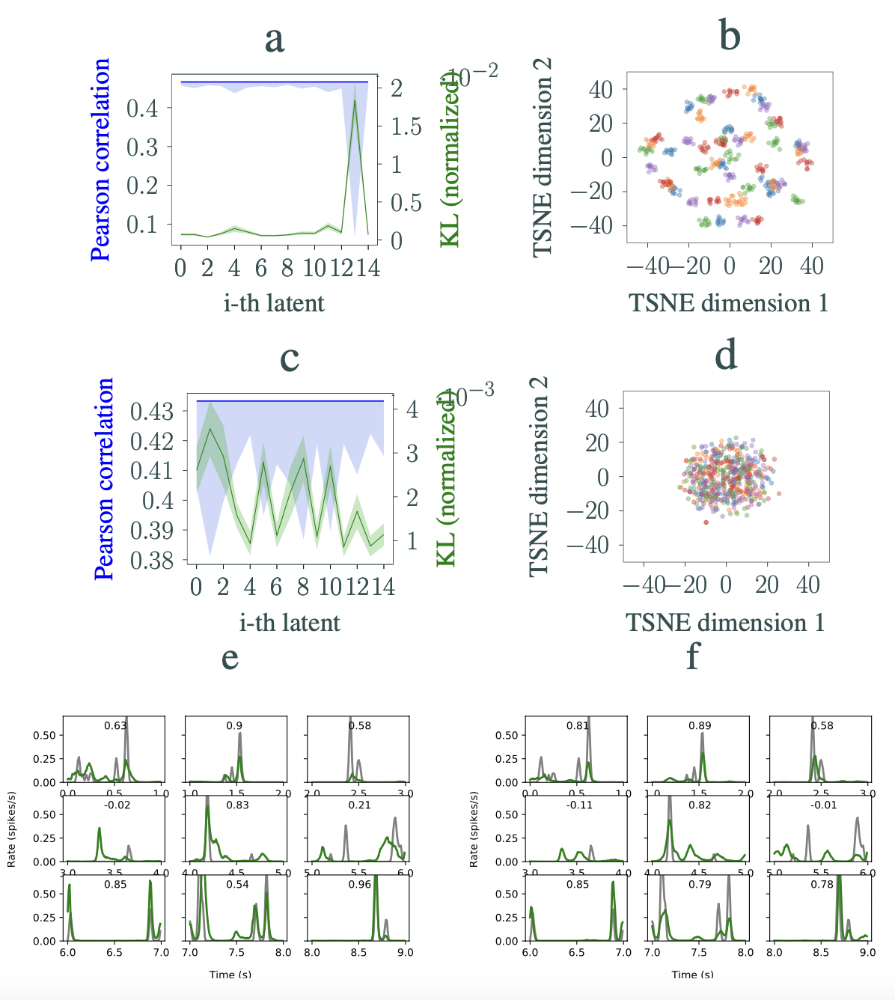
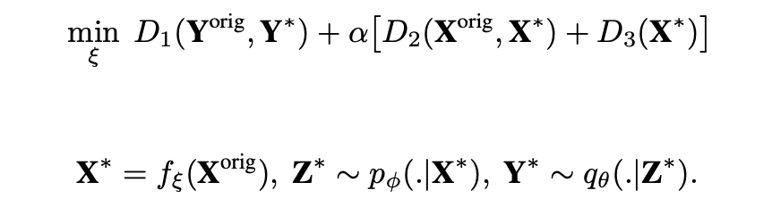
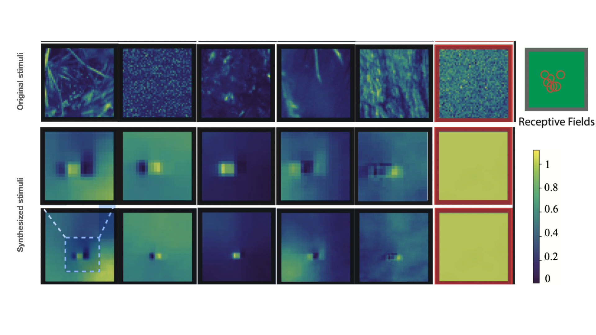

A probabilistic model for joint modeling of stimuli and retina neural codes based on the Information Bottle-neck
Gaussian Process (IB-GP)
How latent space of the retina responses and video stimuli factorizes
How the IB-GP model could be used in closed-loop to synthesize lower complexity stimuli
July 2019
A bit of a context

Why do we need to have lower complexity stimuli?
Natural stimuli that impinge on the eye are very high-dimensional both spatially and temporally. It is always useful to know what is primarily eliciting neural responses.
In other words: is it possible to reduce the complexity of the input stimuli and still obtain the same functional behavior?
In this work, we focus on the natural vision system and search for answers to these questions.
Our system consists of the spatiotemporal stimuli impinging on the photoreceptors in the retina up to the spiking responses emitted by the Retinal Ganglion Cells (RGCs).
Forward model
Then, how could we go about reducing the complexity of the stimuli? First we need a model that is able to prune noise or stochastic responses of neurons to stimuli.
Inspired by the Deep Variational Information Bottleneck (DVIB) [1, 2], we introduce the Information Bottleneck Gaussian Process (IB-GP),
a latent space model that can extract the principal features of the joint stimuli-responses distribution that are sufficient for predicting the retina responses.
The schematic of the IB-GP is depicted in Figure 1. The objective of IB is to obtain a reduced representation of the input source that preserves maximum information about the output response.
The temporal correlations among data samples is incorporated in the latent spacd via Gaussian process prior.

The IB-GP model minimizes the mutual information of the high-dimensional stimuli and the latent space while at the same maximizing the mutual information of
the latent space and the neural responses. The trade off between these two objectives is controlled by a tuning parameter.
This way, we ensure the unnecessary information in the stimuli and neural responses is pruned! To show the importance of taking temporal correlation into account when
learning the joint distribution of the stimuli and neural responses, we compare IB-GP with IB-Disjoint in which the Gaussian process constraint of the latent space is replaced with an isotropic univariate Normal distribution.
We test the performane of the IB-GP model on Natural dataset for various latent sizes and trade off parameters. Results are shown in Figure 2. The baseline model is based on [3].
Analysis of latent space

In Figure 3, we analyze the learned dynamics of the IB-GP and IB-Disjoint trained under the same conditions on the Natural dataset.
For β = 0.05 and 15 latents, performances of the IB-GP and IB-Disjoint in prediction of RGCs’ responses are similar (correlation ∼ 0.45 vs. ∼ 0.43, respectively).
Nevertheless, the amount of information picked by latents in each model varies significantly.
To show this, we perform a traversal analysis of the latents and report the variability in the output responses for each traversed latent in Figure 3(a,c).
The KL divergence for each latent is also plotted. As observed in the figure, IB-GP lumps most of the information required to explain the neural responses in one factor.
In comparison, this information is spread over five factors in IB-Disjoint. Analyzing the dynamics of the latents in each model can provide further insight.
Figure 3(b,d) visualizes the inferred dynamics of the most informative latent in each model after reducing the dimension to 2 with T-SNE.
As observed in the figure, the dynamics of the most informative latent in the IB-GP have 50 clusters. Strikingly, these 50 clusters correspond to the 50 unique stimuli in the dataset.
The test set consists of 5 batches in which each batch has 10 unique im- ages (each jittered 100 times). Each batch is colored differently in the figure.
To demonstrate the efficacy of the IB-GP model in fitting the RGCs’ responses, neural activity predictions of both models are shown in Figure 3 (e,f).
Closed-loop image synthesis
We take advantage of the model developed in the previous sections to devise an algorithm that uses the prior recorded data to optimize the stimulation by iteration in subsequent measurements in a closed loop.
Specifically, we assume the latent variables of the learned model have captured the principal rules governing the underlying biological system.
We intend to find a transformed version of the original input stimuli that yields a set of latent variables that produce the most correlated responses with the original target responses in the subsequent round of measurements.
Hence, we define a parametric function $f_\xi: \mathbb{R}^{M \times T}\rightarrow \mathbb{R}^{M \times T} $ that maps the complex original stimuli $\textbf{X}$ onto the transformed stimuli $\textbf{X}^*$.
Passing $\textbf{X}^*$ to the forward model, the parameter of the mapping functions, i.e. $\xi$, are optimized so that the forward model's output responses $\textbf{Y}^*$ are the most correlated with the original responses $\textbf{Y}$.
Denoting the original stimuli and responses as $\textbf{X}^{orig}:=\textbf{X}$ and $\textbf{Y}^{orig}:=\textbf{Y}$, the objective function reads as:

Therein, $p_\phi$ and $q_\theta$ are the encoder and decoder of the forward model trained on the prior data. $D_1$ is a measure to ensure the closeness of the original target outputs and the responses of the forward model to $\textbf{X}^*$.
$D_2$ is a similarity measure between the original and synthesized stimuli $\textbf{X}^{orig}$ and $\textbf{X}^*$ which encourages the image synthesizer to focus on finding the essential features in the stimuli rather than synthesizing entirely new solutions.
Finally, $D_3$ is used to constrain the synthesized stimuli $\textbf{X}^*$ to be smooth.

Figure 4 reports the training results of the closed-loop experiment after the first round of measurements. Therein, the IB-GP is used as the forward model in the training of the image synthesizer.
As can be observed, dimensionality reduction of the stimuli without neural information results in synthesized stimuli with excellent smoothness and visible patterns that stimulate neurons maximally.
We observed various types of optimal stimuli for the Natural dataset, such as Gabor-like filters, on- and off-center Gaussians, or a mixture of both.
Conclusion
This work presents the IB-GP model, a latent space variational model that learns a low-dimensional
representation of the Natural stimuli and RGCs’ responses. We observed that the IB formulation of
the neural activity fitting allows learning of a low-dimensional representation of the stimuli and RGC
responses which is more predictive than the feedforward models. We demonstrated that incorporating
a temporal prior on the latent space of the IB model factorizes the sources of neural variability into
fewer latents. The Latent analysis of the model revealed the superior performance of the IB-GP to IB-
Disjoint with no temporal prior on the latents. We observed that the dynamics of the high-dimensional
stimuli and RGCs’ responses were very well represented in the embeddings of the IB-GP model.
The model was then used in a closed-loop experiment to synthesize stimuli that elicit neuronal
responses as those elicited by the original complex stimuli. Previously published work in the
literature also looked into closed-loop image synthesis, mainly to find optimal stimuli that maximally
activate neurons in the retina [4], or more recently in V1 and V4 regions in the mouse [5, 6]. The
goal is to obtain spatial features that do not necessarily resemble the original stimuli but still elicit the
same responses. This allows us to correctly use the resources available, for example, by placing the
stimulation energy at suitable locations and with the correct spatiotemporal features. We observed
various types of optimal stimuli for the Natural dataset, such as Gabor-like filters, on- and off-center
Gaussians, or a mixture of both.
[1] A. A. Alemi, I. Fischer, J. V. Dillon, and K. Murphy. Deep vari- ational information bottleneck. arXiv preprint arXiv:1612.00410, 2016.
[2] F. P. Casale, A. V. Dalca, L. Saglietti, J. Listgarten, and N. Fusi. Gaussian process prior variational autoencoders. arXiv preprint arXiv:1810.11738, 2018.
[3] L. McIntosh, N. Maheswaranathan, A. Nayebi, S. Ganguli, and S. Baccus. Deep learning models of the retinal response to nat- ural scenes. Advances in neural information processing systems, 29:1369–1377, 2016.
[4] L. Paninski, J. Pillow, and J. Lewi. Statistical models for neural encoding, decoding, and optimal stimulus design. Progress in brain research, 165:493–507, 2007.
[5] E. Y. Walker, F. H. Sinz, E. Cobos, T. Muhammad, E. Froudarakis, P. G. Fahey, A. S. Ecker, J. Reimer, X. Pitkow, and A. S. Tolias. Inception loops discover what excites neurons most using deep predictive models. Nature neuroscience, 22(12):2060–2065, 2019.
[6] P. Bashivan, K. Kar, and J. J. DiCarlo. Neural population control via deep image synthesis. Science, 364(6439), 2019.